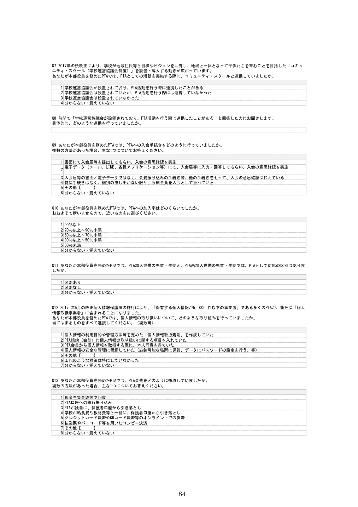
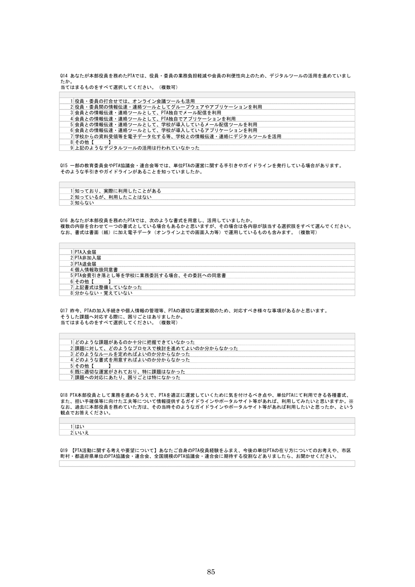
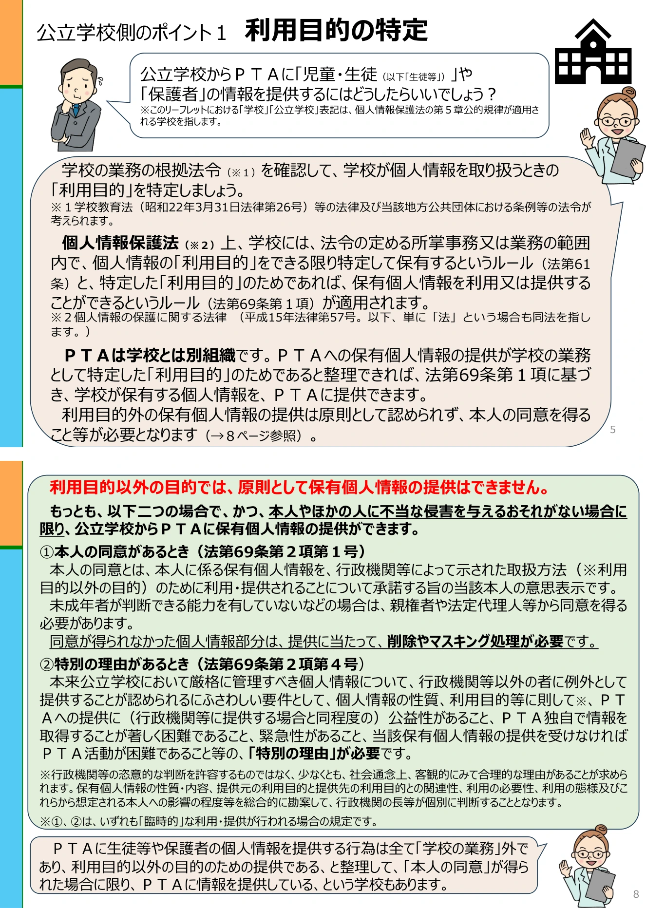
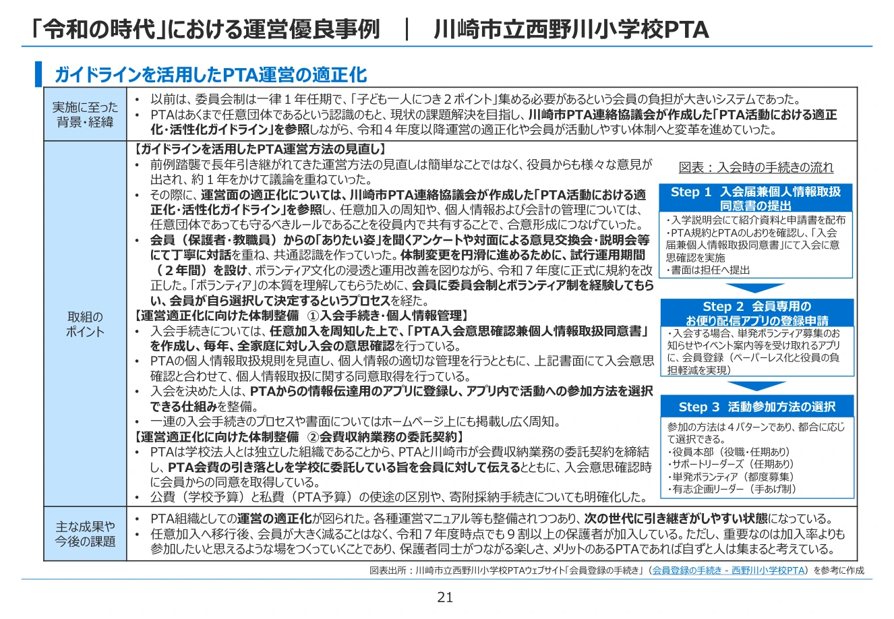

文部科学省が日本総合研究所（日本総研）へ委託したPTA運営改善調査は、任意加入、個人情報、会費徴収、学校へのPTA事務委託、運営改善を扱い、七つの「運営優良事例」を紹介した。そこには、学校徴収や学校への事務委託を含む事例もある。では、この「優良」は、公立学校側の法令適合性まで確認した評価なのだろうか。［1］［2］
本稿は、日本総研の事例を違法と評価するものではない。個人情報保護委員会（PPC）と日本総研が、明示的な法解釈として正面衝突していると断定するものでもない。問うのは、日本総研がPTA側について確認した事項と、個人情報保護委員会（PPC）が公立学校側について先に確認するよう求める事項が、どこで接続されたのかである。
法令適合性を審査したのであれば、その根拠を示せるはずである。審査していないのであれば、「優良」という評価の射程を限定して説明する必要がある。
資料の読み分け
「確認できた事実」は公表された調査票、報告書、制度資料に記載された内容である。「本稿の分析」は資料を対照して導く評価である。「公開資料で未確認」は、記録が公表成果物から見つからないという意味であり、内部審査や個別文書が存在しないとの認定ではない。
1 「運営優良」とは、何についての評価か
確認できた事実：日本総研の報告書は、PTA運営の現状調査と、運営改善に取り組む事例の整理を行っている。別冊事例集は「任意加入の周知」「個人情報および会計の管理」「運営体制の見直し」などを改善の成果として紹介する。［1］［2］
本稿の分析：PTA内部の任意性、合意形成、会計、担い手負担を改善したという評価と、公立学校がPTA会費を徴収し、PTA事務を受任し、学校保有情報や教職員の勤務時間を使うことの適法性は、同じ評価項目ではない。前者を確認したことだけで、後者まで保証したことにはならない。
アンケートの選択肢や事例集に学校徴収が登場すること自体も、文部科学省がその方式の適法性を承認したことを意味しない。調査が何を質問し、どの資料を確認し、どの基準で「優良」と判断したかを分けて読む必要がある。
2 日本総研が実際に調査しているもの
確認できた事実：報告書末尾の調査票では、Q12がPTA側の個人情報の利用目的・規則・本人同意・安全管理を尋ねる。Q13は会費徴収方法の一つとして「学校が給食費や教材費等と一緒に、保護者口座から引き落とし」を置く。Q16は活用している書式として「PTA会費引き落とし等を学校に業務委託する場合、その委託への同意書」を挙げる。［1］




これらは、PTAがどの方式や書式を使ったかを把握する設問である。一方、公開された19問には、学校設置者・学校・校長のどの主体が受任するのか、PTA会費収納を学校側のどの所掌事務として行うのか、会員・非会員の識別や口座照合を学校側のどの利用目的で行うのか、教職員の勤務時間・服務をどう扱うのかを、共通して審査する設問は確認できない。
公開資料で未確認：調査票の外で、文部科学省又は日本総研が学校側の法令適合性を別途審査したか、その審査結果を優良事例の選定へどのように接続したかは、公表成果物から確認できない。
3 個人情報保護委員会（PPC）が公立学校側に求める確認順序
個人情報保護委員会（PPC）の公的部門資料は、本人同意から検討を始めていない。公立学校が情報を扱うときは、次の順序になる。
- 法令上の所掌事務・業務――学校や設置者が行う事務として根拠を確認する。
- 利用目的――その所掌事務を遂行するため、法61条により具体的に特定する。
- 恒常的な取扱いか、臨時的な目的外利用・提供か――毎年繰り返す処理と例外的な提供を分ける。
- 本人同意その他の例外――目的外で臨時的な取扱いなら、法69条2項の要件を個別に検討する。


本人が「学校にやってもらってよい」と同意することと、公立学校がその事務を行政上の業務として行えることは別問題である。 PTA会員の同意は、本人の情報や会費を扱うことへの意思表示にはなり得る。しかし、本人同意、PTA規約、PTAから学校への委任だけで、公立学校の所掌事務が当然に生じるとはいえない。
逆に、条例、規則、要綱、適切な委任・受任関係などにより、学校又は設置者が一定の事務を扱う制度が成立する可能性はある。このため、学校徴収を全国一律に違法とする結論も採らない。確認すべきなのは、個別制度の根拠と運用である。
4 この整理は2026年3月に突然現れたものではない
確認できた事実：個人情報保護委員会（PPC）がPTAを名指しした資料は2026年3月公表である。しかし、公的部門についての基本整理はそれ以前から確認できる。
- 2022年2月の公的部門Q&Aは、恒常的な外部提供に対応する利用目的の特定を説明した。［3］
- 2022年4月の事務対応ガイド新旧対照は、法令上の所掌事務と利用目的を保有の入口に置き、恒常的な利用・提供と臨時的な目的外利用・提供を分けた。［4］
- 2024年3月の公的部門Q&Aは、自治会・社会福祉協議会への名簿提供を例に、恒常的な提供なら法61条による利用目的、臨時的な提供なら法69条2項という区分を具体化した。［5］
- 2025年12月のQ&A更新は、一般的な利用・提供、本人同意、公的部門と民間部門の規律の違いを整理した。［6］
- 2026年3月の学校・PTA向け資料は、従前の一般原則を公立学校とPTAの具体的場面へ適用して説明した。［7］
本稿の分析：したがって、「個人情報保護委員会（PPC）の考え方は2026年3月に初めて登場し、日本総研調査時には存在しなかった」と単純化することはできない。
公開資料で未確認：日本総研の担当者又は文部科学省の委託担当部署が、2022年以降の個人情報保護委員会（PPC）資料を実際に認識・検討したか、2026年3月資料の案が公表前に共有されたかは確認できない。資料が公開されていたことと、担当者が認識し調査設計へ反映したことは別の事実である。
5 日本総研と個人情報保護委員会（PPC）の間にある審査順序のずれ
| 日本総研が確認しているもの | 公立学校側で別途確認すべき公的条件（個人情報保護委員会（PPC）・服務等） |
|---|---|
| PTA会費を学校が徴収している | 学校又は設置者がその事務を行える所掌・権限があるか |
| 学校委託への同意書 | どの公的主体が、何の根拠で受任するか |
| 本人同意 | 学校側の利用目的を所掌事務の範囲内で特定できるか |
| 徴収方式 | 恒常的な名簿・口座照合・未納・返金・送金処理の根拠 |
| PTA側の運営改善 | 教職員の服務、勤務時間、公的システム・学校口座利用等 |
個人情報保護委員会（PPC）と日本総研報告書が、明示的な法解釈として正面衝突しているとは断定できない。日本総研は、学校側の権限や法61条・69条の適用について、反対の法解釈を明示しているわけではない。
本稿の分析：それでも、適正性を判断する際の出発点、審査順序、評価対象には重大なずれがあり、かなり強い制度的・法的緊張がある。PTA側の任意加入や同意が整っていても、公立学校側の公的適格性が自動的に整うわけではないからである。
6 恒常的な会費処理は、本人同意だけでは説明できない
PTA会費徴収は、一度だけ情報を渡して終わるとは限らない。毎年度、会員・非会員を識別し、徴収対象を確定し、保護者口座と照合し、引き落とし、未納を管理し、返金し、PTAへ送金する反復継続処理を伴い得る。
個人情報保護委員会（PPC）資料p.8は、法69条2項の本人同意等を「臨時的」な利用・提供の規定と説明する。恒常的な処理を「本人同意があるから目的外利用・提供でよい」とだけ整理すると、この区別を説明できない。先に問われるのは、そもそも学校側の利用目的として特定できる所掌事務なのかである。
この順序は、同意を軽視するものではない。同意が必要な場面で適切に取得することと、行政主体がその仕事を受任できる根拠を確認することを、二つの独立した条件として扱うものである。
7 西野川小「運営優良事例」を具体的に読む
確認できた事実：日本総研の事例集は、川崎市立西野川小学校PTAについて、任意加入の周知、毎年の入会意思確認、個人情報取扱いへの同意、PTA会費の学校徴収、PTAと川崎市との会費収納業務の委託契約を紹介している。入会書面は担任へ提出すると図示されている。［2］


川崎市には、学校徴収を慣行だけで処理するのではなく、PTA代表者からの委任、市立学校とPTAとの協議、他の校務に支障がないこと、受任通知を定める要綱がある。したがって、西野川小が学校徴収を行っているという事実だけで、違法と結論づけることはできない。［8］
一方、公表された日本総研の成果物からは、西野川小を「運営優良」と評価する際に、個別の委任状・受任通知、学校側の利用目的、担任による入会届受領の位置付け、非加入者情報を学校が扱う必要性、教職員負担、学校徴収金政策との整合まで確認した記録は見つからない。
本稿の分析：PTA内部の任意性、同意、運営改善は評価できる。それとは別に、公立学校を巻き込む処理について、個人情報保護委員会（PPC）が求める学校側の公的規律まで含めて「優良」と評価したのかを明らかにする必要がある。これは西野川小の個別制度を違法認定する問いではなく、「優良」という評価の審査範囲を確定する問いである。
公開資料で未確認：文部科学省又は日本総研が、事例選定、法務照会、成果物確認の内部過程でこれらを別途確認した可能性は残る。公表成果物に確認記録がないことから、法務審査そのものが行われなかったとは断定しない。
8 「優良」の射程は、二つの場合に分かれる
A 学校側の法令適合性まで審査していた場合
本委託事業が、公立学校によるPTA会費徴収、PTA事務の受任、学校保有個人情報の利用、教職員によるPTA事務について、学校側の法令適合性まで審査したのであれば、審査項目、審査基準、確認資料、担当部署、判断過程、個別事例への適用記録を示すことができるはずである。
B 学校側の法令適合性を審査対象としていなかった場合
この場合、「運営優良事例」という評価は、本調査で実際に設定・確認した運営上の評価項目の範囲に限定される。公立学校による会費徴収、学校によるPTA事務受任、学校保有個人情報の恒常利用、教職員によるPTA事務の法令適合性まで確認・保証したものではない。
他の教育委員会・学校が事例を参照し、横展開するときには、各学校設置者が所掌事務、利用目的、恒常的な個人情報取扱い、服務、学校徴収金制度、公的システム・学校口座利用等の法的・行政的根拠を別途確認する必要がある。
法令適合性を審査したのであれば、その根拠を示すことができるはずである。審査していないのであれば、「優良」という評価の射程を限定して説明する必要がある。現時点では、この二つのどちらであるかを公表成果物から確認できない。
個人情報保護委員会（PPC）と日本総研の間にあるのは、単純な「矛盾」ではない。PTA側の運営改善を評価する設計と、公立学校側の公的適格性を入口から審査する設計が、どのように統合されたかが見えないという空白である。この空白を埋めなければ、「優良」という言葉だけが、確認していない範囲まで適正だという印象を与えかねない。
この点を含む政策形成過程、情報公開請求候補及び文部科学省への照会事項については、詳細調査報告書「文科省・日本総研PTA委託調査の検証報告書」（HTML入りZIP）で整理している。
一次資料
- 日本総研「PTAの運営改善に係る調査研究報告書」、文部科学省委託、全85頁。調査票Q12・Q13はPDF p.84、Q16はp.85、西野川小事例はpp.64–66。
- 日本総研「『令和の時代』における運営優良PTA事例」、文部科学省委託、全38頁。川崎市立西野川小学校PTAはpp.20–23、会費収納業務と入会手続はp.21。
- 個人情報保護委員会「個人情報の保護に関する法律についてのQ&A（行政機関等編）」、令和4年2月公表資料の該当箇所PDF p.4。
- 個人情報保護委員会「事務対応ガイド（行政機関等向け）新旧対照表」、2022年4月、PDF pp.58–61。
- 個人情報保護委員会「Q&A（行政機関等編）」2024年3月版、旧Q3-3-2、PDF pp.25–26。
- 個人情報保護委員会「Q&A（行政機関等編）新旧対照表」、2025年12月12日更新、PDF pp.13–15。
- 個人情報保護委員会事務局「公立学校とPTAの間で個人情報のやりとりをするためのポイント」、2026年3月。所掌事務・利用目的pp.5–7、目的外提供と臨時的規定p.8、委託と提供pp.9–10、資料の限界p.17。
- 川崎市「川崎市立学校におけるPTAの会費の取扱等に関する要綱」、令和6年4月施行版、全2頁。委任、学校・PTA協議、校務への支障、受任通知を規定。